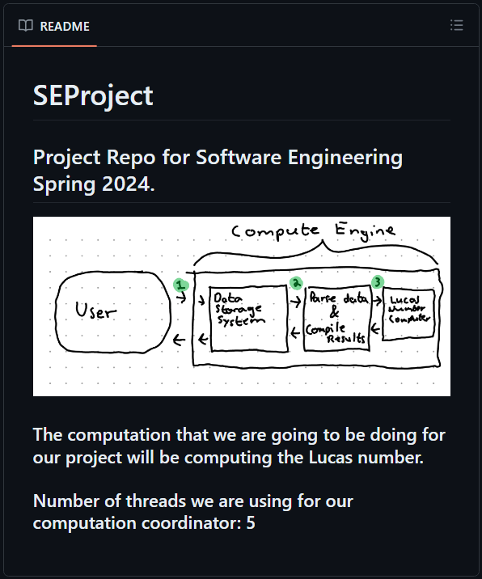
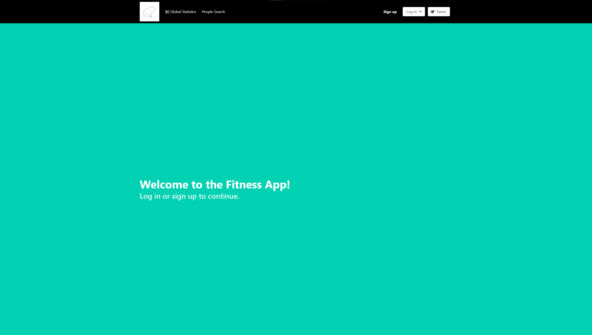

Lucas Number Project
The point and idea of this project was to create a lucas number calculator that incorporates multiple programming concepts. Some of these concepts include: Multithreading, Smoke Testing, Pair Programmming, of which can all of these and more can be seen here.
Fitness App(Vue)
This project involved learning the workflow and overall project building process with vue, this project opened my eyes to what website making in the more modern sense is like. Client side was the first challenge, after that we tackled the server side, I definitely struggled more with server but I learned a lot from it.
The Bass
I don't know where to begin with the bass, it has done a lot for me. Through picking up an instrument it has given me a new outlet to express myself, a similar outlet in a way to coding or art. In a way to me music has become a language, not one with words but one with expression of emotion.
This Site!?
This site was a great experience for me, I never knew how websites really worked or how they were constructed. Now, through this class, some of the mysteries has been uncovered. Super happy that I took this class! I would recommend anyone to make a website, it could be used as a blog or maybe a research page, or even an app if you want to really dive into it. A static page like this is very doable, I would say it is a great form of expression and fun, and there is always something new to learn. and a helpful life skill!!